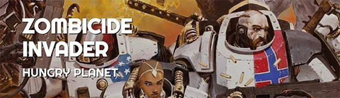
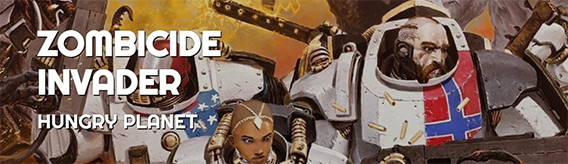
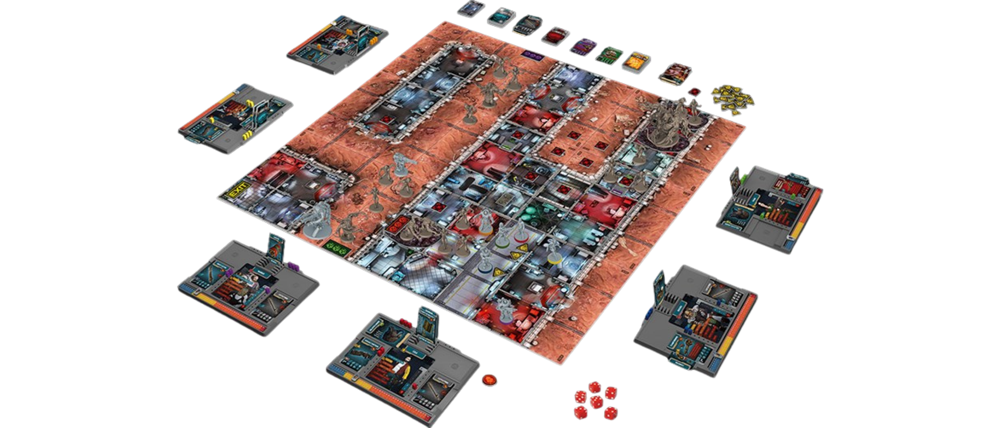

Humans set off into the stars in search of high-powered fuel and found it in the remote corner of the universe on the small planet PK-L7.
Their discovery of Xenium — a dark, oily compound deep below the planet's surface — was everything they hoped for.
But they found something else, too.
The Xenos attack was brutal and unrelenting.
While the scientists and soldiers have held them off the best they could, the Xenos are still coming...
Zombicide: Invader is a cooperative game in which 1-6 players face Xenos, an unfathomable swarm of infected Xenos controlled by the game itself.
Each player takes on the role of one to six survivors in a sci-fi setting being overwhelmed by these Xenos.
The goal is simple: Choose a mission, complete its objectives, kill as many Xenos as possible, and (most importantly) survive!
Survivors will fight Xenos, rescue each other, recover vital data, unveil dark secrets, and much more!
Survivors can be civilians or soldiers, each with specialized skills.
They all play together as a team, trading equipment, and covering each other.
They use whatever weapons they can get to kill Xenos and slow the invasion.
The better the weapon, the higher the body count, but the more Xenos will appear, attracted by the onslaught!
Survivors must also be mindful of their location as conventional weapons work fine indoors, but the planet’s oxygen-starved surface, they'll need to arm themselves with more specialized weaponry.
Lasers, anyone?
Most of the time, Xenos are predictable, but there are a lot of them and they use nasty tactics not encountered in previous Zombicide games.
Only through cooperation can players achieve the Mission objectives and win.